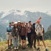

Відкрий світ українського Скаутингу!
Приєднатись до нас
Про нас
Скаути України - це молодіжна громадська організація, що сприяє розвитку молодих людей через Скаутинг. Ми прагнемо виховувати лідерів та відповідальних громадян, надаючи можливості для пригод, навчання та самовдосконалення.
-

Наша Історія
Національну Організацію Скаутів України (НОСУ) засновано у 2007 році. У 2008 році на 38-й Всесвітній Скаутській Конференції у Кореї НОСУ стала повноправним членом Всесвітньої Організації Скаутського Руху (далі – ВОСР). Наразі ми нараховуємо вже 2000+ учасників, маємо 173 країни-партнери та провели 1320+ освітніх заходів.

-
Місія
Наша Місія – це сприяння вихованню молоді України за системою цінностей, заснованій на Скаутській Обіцянці та Скаутському Законі. Через Скаутинг ми будуємо кращий світ, де люди самореалізуються як особистості та відіграють конструктивну роль у суспільстві.
-

Програма
Скаутська Молодіжна Програма є основою Скаутингу. Це відповідно організований, практичний навчальний процес для дітей та підлітків, спрямований на гармонійний та всебічний розвиток особистости задля досягнення свого найвищого потенціалу.
-
Скаутський Метод
Скаутський метод – це унікальна система прогресивного розвитку, яка базується на 8 ключових елементах. Вони використовуються лише всі разом та сприяють повноцінному всебічному розвитку особистості у Скаутингу.
Скаути україни
1320+
Освітніх заходів
173
Країни - партнери
35+
Об‘єднань в Україні
Наші заходи
-
Табори

Збори-походи надають дітям можливість розвивати свої інтереси та хобі, а також застосовувати на практиці знання та навички, отримані в Скаутингу протягом року.
-
Міжнародні заходи

Участь у міжнародних подорожах створює умови для пізнання Скаутами навколишнього світу, включаючи все різноманіття культур, мов та країн.
-
Тренінги
Орієнтовані на Скаутів та Скаутських лідерів на різних етапах їхньої Скаутської подорожі та розроблені таким чином, щоб задовольнити потреби й інтереси членів різного віку.
-
Онлайн івенти

НОСУ є гнучкою у використанні різноманітних форм в роботі зі Скаутами. Це дає можливість не тільки брати участь у інтерактивних воркшопах та тренінгах, але й у міжнародних заходах, залишаючись в Україні.
Відгуки про Скаутинг
-
Для мене Скаутинг - це місце, де цікаво все: я знаходжу нових друзів, граю в активні ігри, дізнаюсь нове, подорожую та беру участь у таборах. А ще, я почала старанніше вчити англійську, бо вона потрібна на міжнародних івентах. Бути Скаутом захоплює!
Поліна Прик
Скаут СО Тотем
-
Це дійсно унікальна можливість для саморозвитку та формування характеру. Я пишаюся дивовижними молодими людьми, які виросли з дітей моїх знайомих, що в НОСУ з дитинства. Мій син - у Скаутах, а дочка нещодавно стала Кабскаутом, і я не памʼятаю її щасливішою.
Андрій Смиковський
Батько дітей-Скаутів
В моєму патрулі - всі мої найкращі друзі! Я з нетерпінням чекаю кожної зустрічі, аби проводити час разом та дізнаватися нове.
Єсенія Пономаренко
Кабскаут СО "Асгард"
-
На вихідних я завжди з посмішкою вирушаю до своєї Cкаутської групи, бо знаю, що на мене чекають. Популярний стереотип: "Скаутинг - це лише для дітей", однак мій досвід відкрив мені безцінні уроки, яких не змогли надати ані школа, ані університет, ані робота. Окрім цього, я відчуваю, що роблю внесок у формування майбутнього України — це надзвичайно важливо, особливо зараз. Сподіваюся, що все більше людей усвідомлюватимуть значущість цієї справи і приєднаються до нас.
Анастасія Ратушняк
Скаут-лідер
Запрошуємо стати
Скаутом або Скаут-Лідером!
Членом Національної Організації Скаутів України може стати кожний, незалежно від віку, походження, раси, гендеру чи віросповідання!
Приєднатись до нас